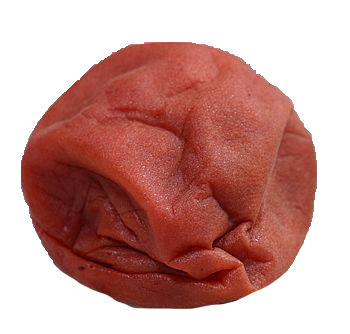

hiyayakko
like a japanese savory flan, there's something that feels very luxurious and a bit executive about this dish, but it's also very simple and fast. a great 'work lunch' to really treat yourself in the middle of the day.
- chilled silken tofu (gotta be silky)

- ginger
- tbsp soy sauce (ideally japanese)
- spring onions
- dashi powder

- katsuobushi (optional)

- mirin (/pinch of sugar)

- finely mince the ginger (kind of paste-like) and stir with soy, a pinch of dashi powder and mirin/sugar.
- cut a generous cuboid of the silken tofu, and dress with finely sliced spring onions (some fancy people like to slice them lengthways), and the katsuobushi if using. pour over the soy/dashi/ginger and serve
goes really well with a simple bowl of white rice and a p i c k l e d p l u m